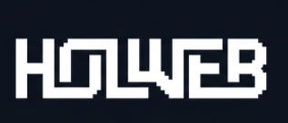

Вариант 01
Слитная надпись Holweb с наклонным шрифтом
Знак H в виде ленты с белым внешним контуром и синей внутренней петлей переходит сразу в строчный наклонный шрифт. Динамичное и цельное начертание.
В названии holweb в первую очередь выделяется корень hol. Сразу возникает ассоциация с греческим словом «holos» (холизм — целостность, комплексный подход, когда система работает как единое целое, а не набор отдельных деталей).
Отсюда логично выделились два направления:
Геометрическая фигура, у которой всего одна сторона и один край. Символизирует непрерывный замкнутый цикл: комплексный подход, где все услуги связаны между собой. Ниже представлены варианты знака и шрифтовых решений.
Знак H в виде ленты с белым внешним контуром и синей внутренней петлей переходит сразу в строчный наклонный шрифт. Динамичное и цельное начертание.

Самостоятельная иконка для фавикона, аватара и мобильных приложений. Сохранен наклон, загнутый нижний хвост и контраст двух цветов.

Плавный объемный перекрут металлической ленты со светотенью и чистым гротеском рядом. Подходит для презентаций, крупных баннеров и обложек.

Тот же перекрут, но в чистой плоской графике без градиентов. Легко масштабируется и читается в любом размере.
Аккуратные ступенчатые края с наклоном -10°. Фирменная надпись набрана в наклонном жирном гротеске.
Массивные квадратные пиксели и наклонный моноширинный шрифт. Четкий цифровой характер.

Объемная пиксельная лестница в бесконечность. Ассоциация со ступенями роста сайта в поисковой выдаче.
Так как в основе лежит греческое слово holos, второе логичное направление — меандр. Это непрерывная орнаментальная линия с прямыми углами 90°. В логотипе она работает и как отсылка к Греции, и как образ цифровой схемы, где все элементы связаны в единую цепь.

Вся надпись выполнена единым непрерывным контуром. Буква H переходит в O, O в L, L в W, W в E и B. Ступенчатые 90-градусные углы создают монолитный и строгий образ.

Непрерывная линия связывает все буквы, а точка в центре буквы W служит визуальным фокусом и центром симметрии.

Плотный массив с белыми прорезями. Буквы читаются как цельный тяжелый блок, похожий на архитектурную плиту.

Вариант с подчеркнутым внешним контуром вокруг пиксельных ступеней. Выглядит как графичная наклейка или патч.

Отдельная монограмма H: замковый лабиринт под 90° и спокойный читаемый шрифт holweb рядом. Строгий знак с надежной устойчивой геометрией.

Асимметричные встречные повороты линии создают эффект движения и зацепления шестеренки или электронного чипа.
Проверка любого знака на разных фонах и в разных масштабах — от шапки сайта до фавикона 16×16px.
Готов доработать выбранный концепт, подготовить исходники в векторе (SVG, Figma) и собрать оформление для Kwork.
Написать в профиль Kwork (watizzzlove) →